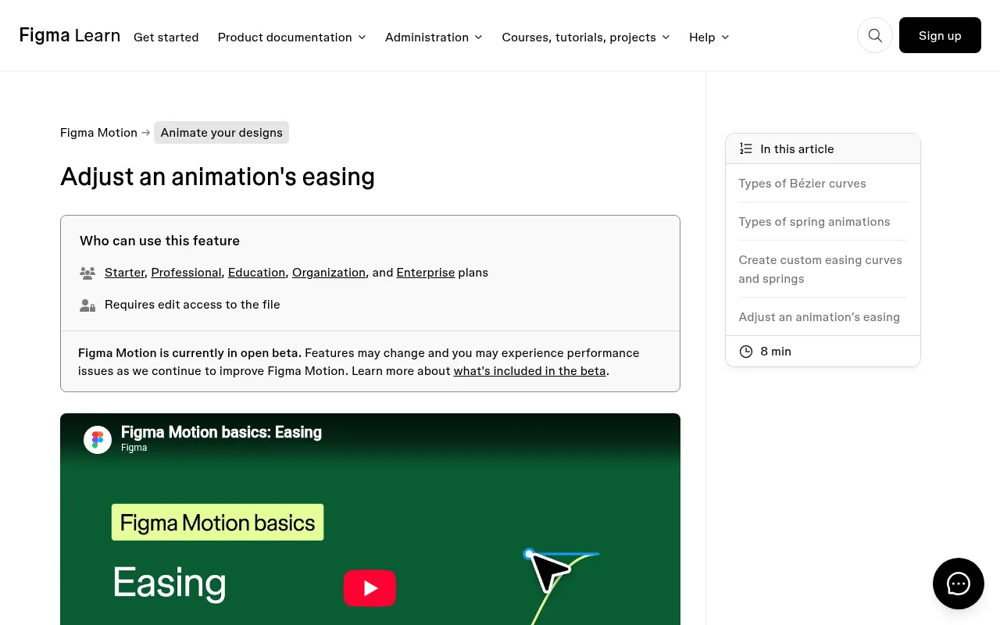
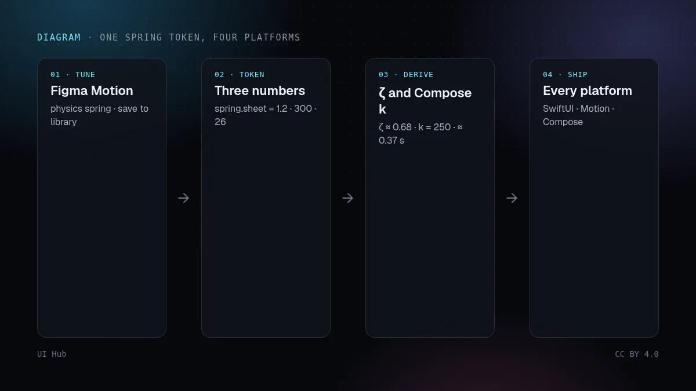
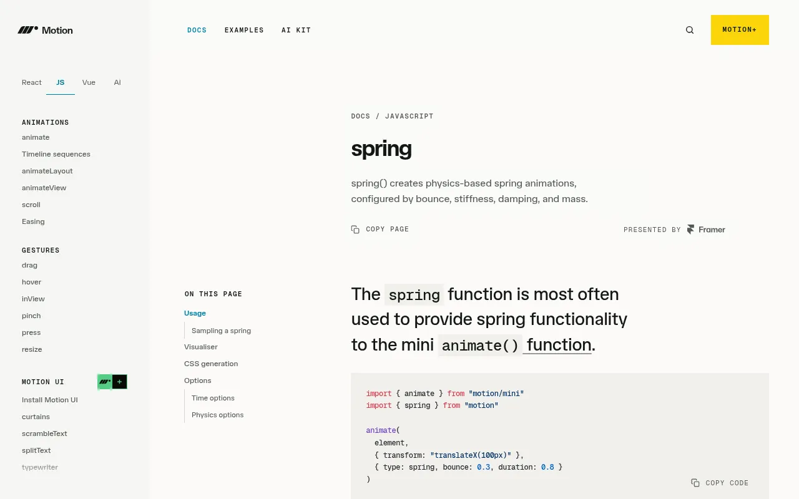

2026 年 11 月 10 日，Figma 发布了一组小小的 Motion 更新，其中一项改变了动效交给工程师的方式。Figma Motion 的自定义弹簧现在可以是基于物理的：你设置质量、刚度和阻尼，时长由它们算出来，而不是手动填写。Figma 说这个弹簧可以存进设计系统重复使用。同一次更新还加入了样式预览，每个预设动画在应用之前就会在列表里和画布上播放；以及 Lottie 导出预览，导出前就能看到动画作为 Lottie 文件播放的效果。

bounce 值，figma.motion.physicalSpringToNormalized() 负责把质量、刚度、阻尼换算成它。Figma 官方的智能体技能文档写明，读回关键帧时只返回 bounce。
多年来，动效交付就是规范里写一句「300 毫秒，ease-out」，剩下的让开发去猜。弹簧解决了两件从来交接不过去的事：动画被打断时会保留速度而不是跳变，手感来自每个平台都能复现的物理规律。但只有数字跟着走，弹簧才可移植。上面那条 API 细节很关键：如果智能体或插件读取你的文件，拿到的是归一化的 bounce，而不是你调好的质量、刚度和阻尼。所以别让 Figma 文件成为弹簧唯一存在的地方。给它起名，把三个数字写进 Token 文件，和颜色、圆角放在一起，把 Figma 当作这个 Token 的使用方之一。
第二点是各平台接受的参数不一样。SwiftUI 和 Motion 直接接受质量、刚度和阻尼；Jetpack Compose 接受阻尼比和刚度，表现相当于质量为 1。如果有人不换算就把「刚度 300」照抄过去，Android 版的手感就会不同。换算只是简单的物理，应该写在 Token 里，免得有人手算：
dampingRatio = ζ，stiffness = 刚度 ÷ 质量。算个例子：抽屉弹簧质量 1.2、刚度 300、阻尼 26，得到 ζ ≈ 0.68，Compose 刚度 250，大约 0.37 秒稳定。按钮弹簧质量 1、刚度 400、阻尼 30，ζ = 0.75，大约 0.27 秒稳定。这些是我们按公式算的，手感仍要在真机上确认，但它说明了为什么要交付的是这些数字，而不是一个时长。
第三，Lottie 不是弹簧。Lottie 文件播放的是带缓动曲线的关键帧，物理效果在导出时就被「烤」死了，不会响应打断。插画或成功动画这样没问题；但对用户会拖动、关闭或连点两下的界面就是错的。新的 Lottie 预览，正是决定你在做哪一种的时刻。
spring.snappy、spring.sheet、spring.bouncy，存进 Figma 设计系统，并在 Token 文件里同步一份。prefers-reduced-motion 时，把位移换成短暂淡入淡出，或 ζ 为 1、没有位移的弹簧。# 把这段贴给你的编程智能体
把 tokens/motion.json 里的动效 Token 接入应用。
每个弹簧都有 mass、stiffness、damping。各平台这样用：
SwiftUI：Spring(mass:stiffness:damping:)
网页（Motion）：transition { type: "spring", mass, stiffness, damping }
Compose：spring(dampingRatio = damping / (2*sqrt(stiffness*mass)),
stiffness = stiffness / mass)
不要用固定时长替换弹簧。抽屉和底部面板用 spring.sheet，
按钮和开关用 spring.snappy。
开启 prefers-reduced-motion 时改用 150 毫秒的透明度淡入淡出。
每个动画都在进行到一半时打断测试，列出所有出现跳变的地方。
加载指示、进度条、任何和媒体同步的动效，以及无法引入弹簧引擎的纯 CSS 页面，继续用普通缓动加固定时长。CSS linear() 可以通过采样近似一条弹簧曲线，Motion 也能生成这段字符串，但结果长度固定，打断时不会带上速度。把它当作退路，而不是源头。
UI Hub 相关阅读：让动效感觉对、Motion 的 pinch 和 press 手势，以及给智能体的设计 Token。